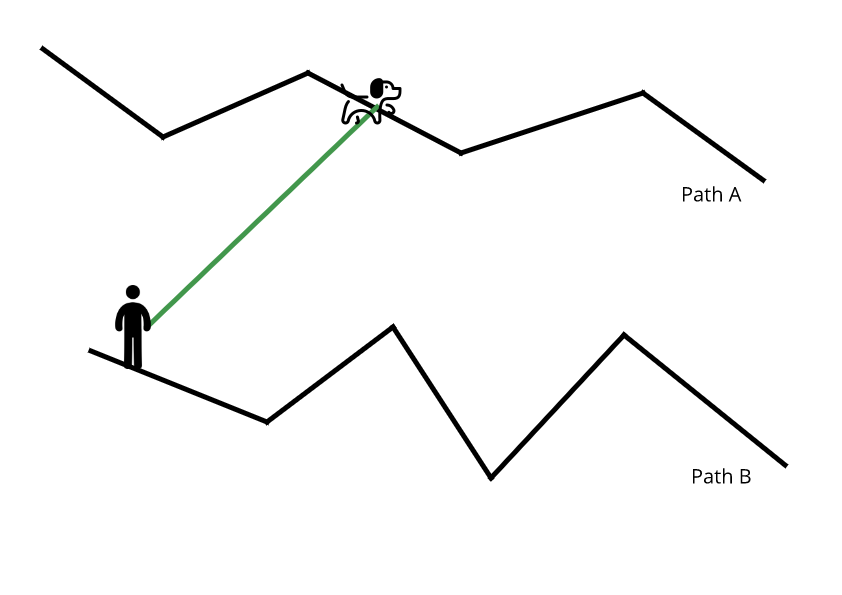
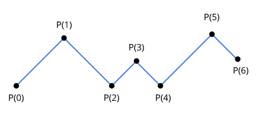
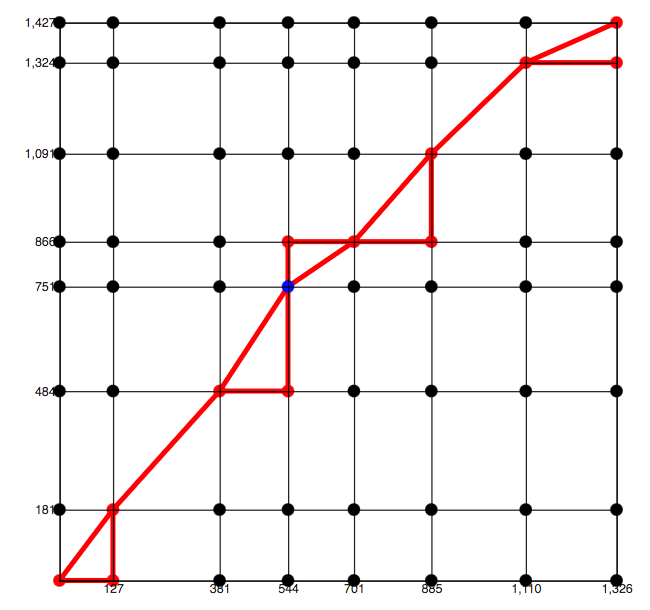

<mat-card class='card-container'>
    <div class='about-container'>

        <h1>Discrete Frechet Distance</h1>

        <p>Definition: The Frechet distance is a measure of similarity between two curves in a given euclidean space. It can be defined intuitively as follows: given a man and a dog walking forward, 
            one on each path, the Frechet distance is the shortest possible leash that can be used by the man to walk the dog along the entire path.  </p>
        <span></span>

        <p>
            The Frechet Distance considers two polygonal curves that can be parametrized with a parameter i, where i &isin; &#8477; and P(i) is a position in the curve. 
            In the case of the discrete Frechet Distance, presented here, P(i) refers to a given node on the path. 
        </p>


        <span></span>


        <h2>Walk on sequences</h2>
        <p>
            Given two curves P and Q, a walk on these curves starts at P<sub>1</sub> and Q<sub>1</sub>, and for every point P<sub>i</sub> and Q<sub>i</sub>, there are three possibilities:
        </p>

        <ul>
            <li>Walk only on P: (P<sub>i</sub>, Q<sub>i</sub>) &rarr; (P<sub>i+1</sub>, Q<sub>i</sub>)</li>
            <li>Walk only on Q: (P<sub>i</sub>, Q<sub>i</sub>) &rarr; (P<sub>i</sub>, Q<sub>i+1</sub>)</li>
            <li>Walk on both P and Q: (P<sub>i</sub>, Q<sub>i</sub>) &rarr; (P<sub>i+1</sub>, Q<sub>i+1</sub>)</li>
        </ul>

        <p>So, a valid walk has the following format:	&#123; (P<sub>1</sub>,Q<sub>1</sub>), ... , (P<sub>n</sub>,Q<sub>m</sub>)	&#125; </p>

        <h2>Formalization</h2>

        <p>The problem of finding the frechet distance betweem two curves can be defined as follows:</p>

        <div class='formalization-container'>
            <p>  D<sub>Fr</sub> = min<sub>f,g &isin; F</sub> max<sub>t &isin; [0,1]</sub> || P(f(t)) - Q(g(t)) ||</p>
        </div>

        <p>where, F: [0,1] &rarr; &#123;1,2,3,...,n &#125;</p>
        <p>and, P,Q: &#123; 1,2,3,...,n &#125; &rarr; R2</p>

        <p>Intuitively, this formalization is telling us that we want to find the minimum bootleneck over all the possible walks on P and Q.</p>

        <h2>Algorithm</h2>

        The algorithm below uses a dynamic programming approach to calculate the frechet distance between two curves in O(pq) time. 

        <code>

            compute(pathP, pathQ, i, j, ca): <br>

                &nbsp;if(ca[i,j]) > -1 return ca(i,j) <br>
                &nbsp;elseif i == 1 and j == 1 then ca(i,j) = dist( pathP(i), pathQ(j) )  <br>
                &nbsp;elseif i > 1 and j == 1 then ca(i,j) = max( compute(pathP, pathQ, i-1, j, ca) , dist( pathP(i), pathQ(j) ))   <br>
                &nbsp;elseif i == 1 and j > 1 then ca(i,j) = max( compute(pathP, pathQ, i, j-1, ca) , dist( pathP(i), pathQ(j) ))   <br>
                &nbsp;elseif i > 1 and j > 1 then ca(i,j) = <br> 
                    &nbsp; &nbsp; &nbsp;max( compute(pathP, pathQ, i-1, j, ca), compute(pathP, pathQ, i-1, j-1, ca), compute(pathP, pathQ, i, j-1, ca) , dist( pathP(i), pathQ(j) ))   <br>
                

                return ca(i,j);

            <br>
            <br>
            frechetDistance(pathP, pathQ): <br>

            &nbsp;ca = [[]] <br>
            &nbsp;for every point in P do:<br>
            &nbsp;&nbsp;for every point in Q do:<br>
            &nbsp;&nbsp; &nbsp;ca[i,j] = -1;<br>

            &nbsp;compute(pathP, pathQ, len(pathP), len(pathQ), ca)<br>


        </code>

        <h2>Free-space diagram</h2>

        The free-space diagram presented in the figure below represents all pair of points where the distance between these points is less than the frechet distance. 
        The system also shows all feasible paths connecting (0,0) to (p,q) for a specific frechet distance. 

        <span></span>


        <h2>How to use</h2>

        <p>The video below shows how to use the applet:</p>

        <iframe width="560" height="315" src="https://www.youtube.com/embed/4EwIv70Zh4U" frameborder="0" allow="accelerometer; autoplay; encrypted-media; gyroscope; picture-in-picture" allowfullscreen></iframe>

        


        
    </div>
</mat-card>